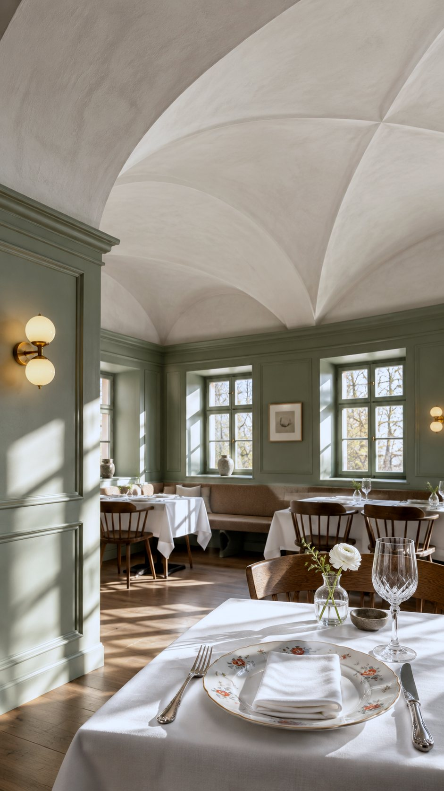
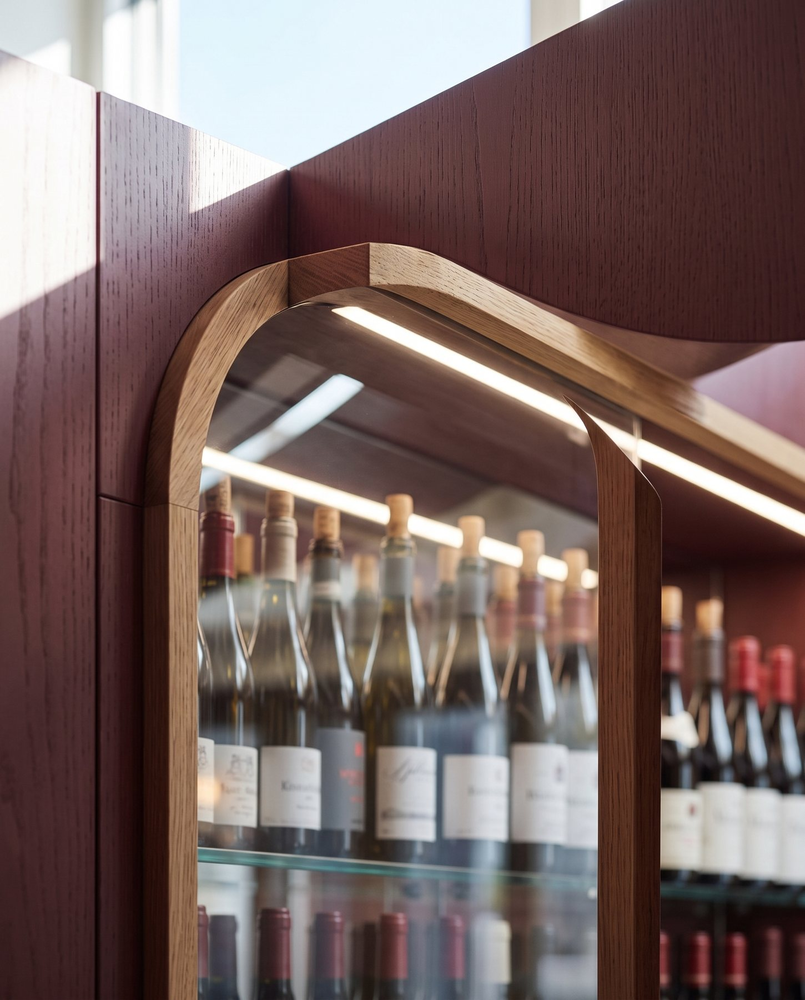
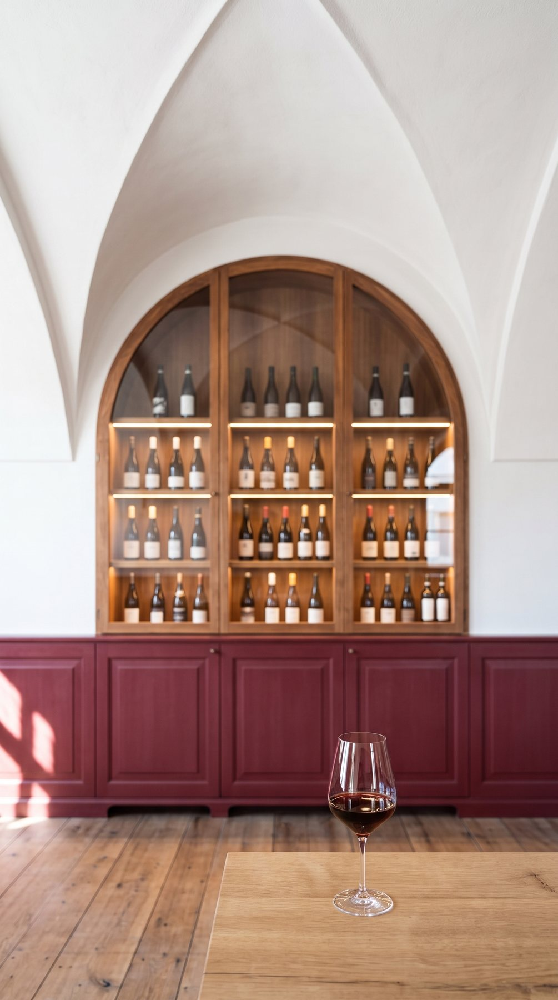
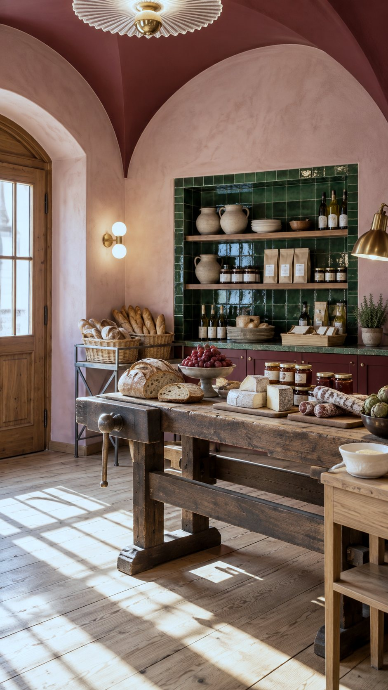
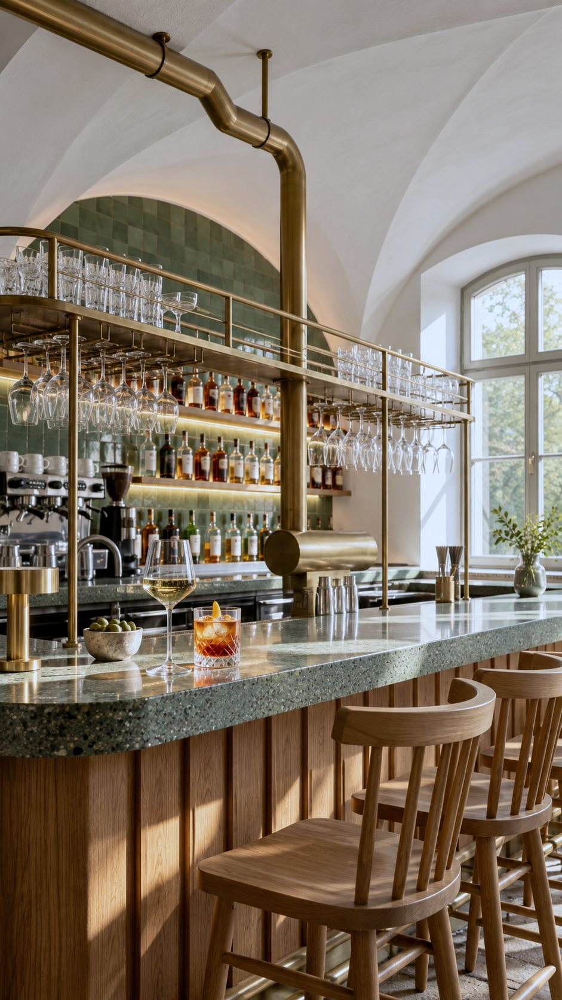

Ein Gasthaus am Kirchplatz.
Alpenländische Küche in einem alten, historischen Haus – mit Vinothek, Biergarten, Greißlerei, Bar und Festsaal.
Alpenländische Küche in einem alten, historischen Haus – mit Vinothek, Biergarten, Greißlerei, Bar und Festsaal.


Unter weißen Gewölben kocht das Gasthaus, im Keller-Rot wartet der Wein, draußen der Schatten der Kastanien. Jeder Raum hat seinen eigenen Charakter.





Ein paar Blicke ins Haus, auf den Tisch und hinter die Theke.